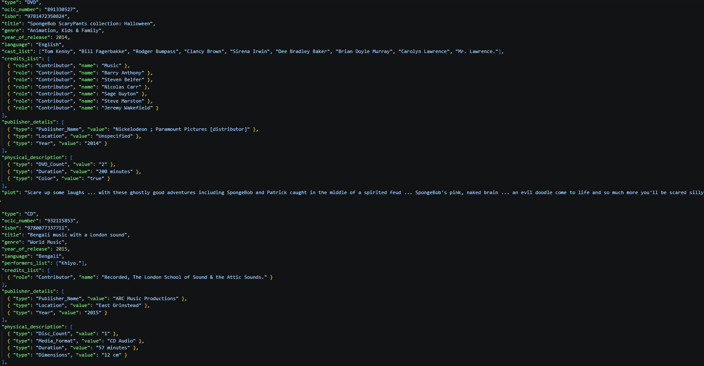
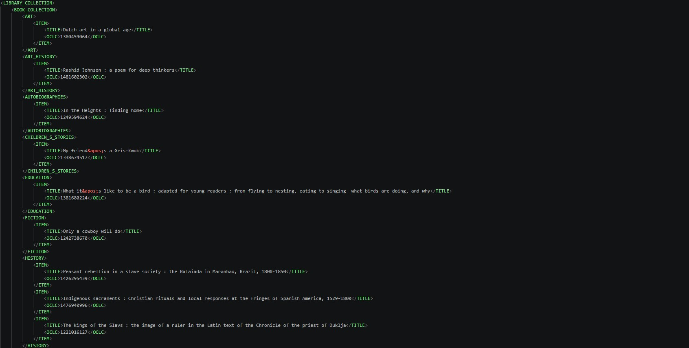
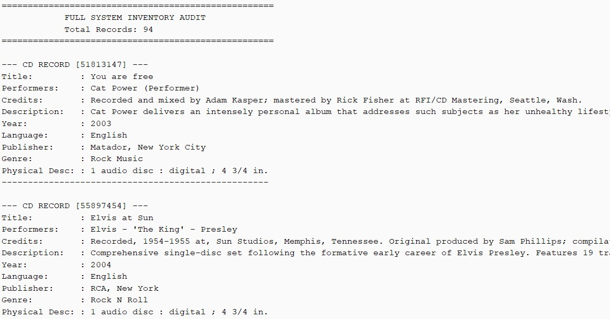

Library Catalogue
Management System
A custom Java desktop application focused on Object-Oriented Design and memory-efficient data serialization.
Video Demonstration
System Gallery



Technical Summary
Built using Java Swing and OOP principles, this application manages diverse media types through inheritance. The primary focus was creating a memory-efficient XML parser using StringBuilder, avoiding heavy external libraries.
Key Features
The system implements full CRUD functionality with a custom search engine. I designed a hierarchical classification for Books, CDs, and DVDs, ensuring automated data normalization and reliable persistence.